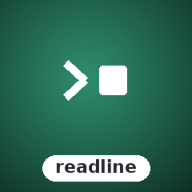

SugarReadline
Interactive line-editing prompt state machines for terminal UIs — text, selection, multi-select, textarea and confirmation prompts

SugarReadline is the interactive line-editing layer of the SugarCraft stack: text, selection, multi-select, textarea and confirmation prompts with full keyboard handling, filter-as-you-type, pagination, persistent history and Vi or Emacs editing modes. Every prompt is an immutable state machine, so you can drive one directly from a test or a script, or hand it to Readline, which wires it to a real terminal. It has no external readline dependency; the design antecedent is erikgeiser/promptkit, ported in spirit rather than line for line.
Install
composer require sugarcraft/sugar-readline:dev-masterRequires PHP 8.3 or newer and ext-mbstring. The library pulls in sugarcraft/sugar-core, sugarcraft/sugar-forms, sugarcraft/sugar-input and sugarcraft/sugar-style. No tagged release exists yet, so dev-master is the only resolvable constraint: the versionless form fails Packagist's default stability filter. From a checkout, run composer install inside sugar-readline/ before executing the examples/ scripts.
Quick Start
use SugarCraft\Readline\{Key, MultiSelectPrompt, SelectionPrompt, TextPrompt};
// Prompts are immutable state machines: feed input, read the result.
$name = TextPrompt::new('Your name:')
->handleChar('A')->handleChar('d')->handleChar('a')
->submit();
$name->value(); // 'Ada'
$lang = SelectionPrompt::new('Pick a language:', ['PHP', 'Go', 'Rust', 'Python'])
->handleKey(Key::Down)
->handleKey(Key::Enter);
$lang->selectedValue(); // 'Go'
// Multi-select with constraints: Space toggles, Enter submits only when allowed
$tools = MultiSelectPrompt::new('Pick tools:', ['vim', 'git', 'docker', 'php'])
->withMinSelections(1)
->withMaxSelections(3)
->handleKey(Key::Space)->handleKey(Key::Down)->handleKey(Key::Space)
->handleKey(Key::Enter);
$tools->selectedValues(); // ['vim', 'git']For a real terminal, the same prompts run under Readline. It reads keypresses through a sugar-input driver, repaints view() after every change and returns a typed ReadlineResult carrying the answer, its submission state and the final prompt. On a live terminal use Readline::interactive(), which flips the terminal out of canonical mode around the loop (see Terminal mode below):
use SugarCraft\Readline\{Readline, TextPrompt};
$result = Readline::interactive(TextPrompt::new('Your name: '), STDOUT);
$result->submitted; // false when Esc or Ctrl+C aborted the prompt
$result->value; // the finished answer
$result->prompt; // the final prompt objectWhat's in the box
y and n set the answer directly.ReadlineResult. It owns every terminal write during a run.Concepts
A prompt is a value. Every input method (handleChar(), handleKey(), insertPastedText(), submit(), abort()) returns a new prompt instead of mutating the old one, so a test can keep the state before and after a keystroke and compare them. The answer comes from a per-shape accessor: value() on text and textarea prompts, selectedValue() on a selection, selectedValues() on a multi-select and result() on a confirmation. All five prompt classes implement PromptInterface and SizingInterface, the pair the Readline loop drives.
Prompts never write cursor escapes. Only the Readline repaint loop does, which is why a host that renders view() through its own channel gets identical state without any cursor traffic. Key names are normalized at one choke point (Key::normalize()): a raw control byte such as 0x08 or 0x7F and the symbolic name Key::Backspace reach the same handler.
Each Readline::run() starts its repaint series from row 0 of the display. Write to the output stream freely between runs, but never while a run is in flight.
Tasks and recipes
Validate an answer. withValidator() gates submit(). Return true to accept, a non-empty string to reject and paint that string as the error row, or false, '' or null to reject with the default message. A validator that throws is contained as a default rejection.
$port = TextPrompt::new('Port: ')
->withValidator(static fn (string $v): bool|string =>
ctype_digit($v) && (int) $v <= 65535 ? true : 'Enter a port between 0 and 65535');Keep history across runs. FileHistory stores one escaped entry per line in a 0600 file, with a sidecar lock on bounded writes. It refuses a symlinked history path at construction and throws a RuntimeException rather than follow it.
use SugarCraft\Readline\History\FileHistory;
$history = new FileHistory('/var/tmp/myapp-history', maxHistory: 500);
$name = TextPrompt::new('> ')->withHistory($history);Hide a secret. withHidden() renders each typed character as a mask glyph (* by default, changeable with withMask()). The buffer still holds the real value, which value() returns.
$token = TextPrompt::new('API token: ')->withHidden()->withMask('•');Refresh a long choice list. withChoices($choices, $preserveCursor = true) replaces the options on both list prompts. The active filter is re-applied, and the cursor either stays on its row (clamped to what survives) or moves to the top when you pass false. withPageSize() sets the page length, which defaults to 10.
$picker = SelectionPrompt::new('Pick a host:', $hosts)
->withPageSize(15)
->withChoices($freshHosts, preserveCursor: false);Use Vi editing keys. Attach a mode object with withMode(). ViMode adds a Normal submode with motions, operators such as dd and yy, text objects such as diw, a shared unnamed register and undo. EmacsMode adds Emacs-style bindings in which Escape is a meta prefix.
use SugarCraft\Readline\Mode\ViMode;
use SugarCraft\Readline\TextPrompt;
$prompt = TextPrompt::new('> ')->withMode(new ViMode());Drive a prompt headlessly. Pass an explicit null as the output to run() to advance state without writing anything. A test can also feed a socket pair through StreamInputDriver, as the README shows, and close the stream to end the run.
API reference
| Class | Method | Description |
|---|---|---|
| TextPrompt | static new(label) / withDefault() / withHidden() / withMask() / withCompletions() / withCompleter() / withValidator() / withCharLimit() / withHistory() / withAutoSuggest(bool) / withUndoManager() / withMode() / withModeIndicator() / withDisplayWidth() | Single-line input. Autosuggest is enabled by default and shows only while history is attached. A validator returning a non-empty string rejects and paints that string as the error row; false, '' or null reject with the default message; a truthy non-string accepts. |
| TextPrompt | handleChar(char) / handleKey(key) / handleKeyDirect(key) / insertPastedText(text) / submit() / abort() / value() / cursor() / isSubmitted() / isAborted() / error() / mode() / startHistorySearch() / isSearching() / suggestion() | Drive the prompt and read its state. handleKeyDirect() skips the mode layer. |
| ConfirmationPrompt | static new(label, defaultValue = false) / withConfirmLabel() / withCancelLabel() / withHint() / withAutoSubmit() / handleKey() / submit() / abort() / result() / currentValue() / isSubmitted() / isAborted() | Yes/No prompt. y and n set the answer, and the Left and Right arrows do the same; Tab or Space toggles. Enter submits and Escape or Ctrl+C aborts. Every key arrives through handleKey(); the prompt has no handleChar(). |
| SelectionPrompt | static new(label, choices) / withPageSize() / withFilter() / withChoices() / handleChar() / handleKey() / submit() / selectedValue() | Single choice with type-to-filter and pagination. PageUp and PageDown jump by one page. |
| MultiSelectPrompt | static new(label, choices) / withMinSelections(n) / withMaxSelections(n) / withChoices() / handleChar() / handleKey() / submit() / selectedValues() / selectionCount() / canSubmit() | Several choices with min and max enforcement. Enter submits only when canSubmit() holds. |
| TextareaPrompt | static new(label) / withDefault() / withMaxLines() / withViewportRows() / withDisplayWidth() / handleChar() / handleKey() / insertPastedText() / submit() / abort() / value() / lines() / cursorLine() / cursorCol() | Multi-line editor. Enter submits. Shift+Enter, Alt+Enter and Ctrl+J break a line on terminals that report those chords; where the wire cannot tell them apart, a plain Enter submits. |
| Readline | static fromStdin() / static interactive(prompt, output) / new Readline($input = null, $idleSleeper = null) / onKey() / onMouse() / onFocus() / onPaste() / stop() / isStopped() / run(prompt, output) | The terminal loop. interactive() wraps run() with the raw-mode flip and restore. run() never touches termios. |
| ReadlineResult | submitted · aborted · stopped · value · prompt | Readonly outcome of a run(), built by fromPrompt(). |
| Mode\EmacsMode · Mode\ViMode | name() / consumesCharacters() / handleKey(prompt, key) · ViMode also viMode() and register() | Editing modes, attached with TextPrompt::withMode(). Both implement Mode\ModeInterface. |
| History\InMemoryHistory | new InMemoryHistory(maxHistory = 0) / push() / previous() / next() / search(query, fromIndex, direction) / reset() / clear() / entries() / count() | Per-process store. A cap of 0 means unlimited. Adjacent duplicates collapse. The getPrevious() and getNext() accessors forward to previous() and next(). |
| History\FileHistory | new FileHistory(filePath, maxHistory = 0, tempDir = '', deferWrites = false) / push() / flush() / clear() / path() / setMaxHistory() | Cross-process history in a 0600 file with escaped one-line entries and bounded, locked writes. A symlinked path is refused at construction. Pushes made with deferWrites stay queued until flush() and are lost on a hard kill. |
| UndoManager | push(state) / undo(current) / redo(current) / canUndo() / canRedo() | Immutable snapshot stack, bounded at UndoManager::MAX_STATES (512). undo() and redo() return a triple that includes the new manager, so the caller re-attaches it, as TextPrompt does internally. |
| Key | Up, Down, Left, Right, Enter, Tab, ShiftTab, Space, Escape, Backspace, CtrlA … CtrlZ, Undo, Redo, … | Canonical key names for handleKey(). Raw control bytes normalize to the same names through Key::normalize(). |
| Styles | LABEL · CURSOR · ERROR · COMPLETION · SELECTED · code(Style|string) | The SGR palette every prompt paints with. code() collapses a sugar-style Style into its code string. |
Only methods declared in sugar-readline/src, or inherited from a parent declared there, are listed. A type that extends a class outside that tree, such as \RuntimeException, does not show the methods of that class.
SugarCraft\Readline
Ansi final class
Tiny ANSI helper. Wraps text in \x1b[<codes>m...\x1b[0m. Empty codes is a no-op so callers can pass a configurable style.
| Method | Summary |
|---|---|
static wrap(string $text, string $codes): string | |
static sanitize(string $text): string | Strip C0 control bytes from text before ANSI emission. |
static sanitizeForSingleLine(string $text): string | Single-line posture: like sanitize() but LF is stripped too — a pasted newline must not forge a submit or a multi-line value in a one-line prompt. TAB survives (completion wants it readable). |
ConfirmationPrompt final class
Yes/No confirmation prompt.
| Method | Summary |
|---|---|
__construct(private readonly string $label, bool $defaultValue = false) | |
static new(string $label, bool $defaultValue = false): self | |
withLabelStyle(Style|string $style): self | |
withSelectedStyle(Style|string $style): self | |
withConfirmLabel(string $label): self | |
withCancelLabel(string $label): self | |
withHint(string $hint): self | |
withAutoSubmit(bool $on = true): self | Arm the immediate-answer reflex: with $on, a y or n press selects and submits in one key (finding 090). The feature defaults to OFF — plain usage keeps the documented Enter-to-commit parity, so existing hosts see byte-identical behaviour; calling withAutoSubmit() arms it, withAutoSubmit(false) stays off. |
handleKey(string $key): static | |
submit(): self | |
abort(): self | |
result(): bool | Final boolean answer. False when aborted or before submission. |
currentValue(): bool | Currently selected value, regardless of submission state. |
isSubmitted(): bool | |
isAborted(): bool | |
view(): string | |
withDisplayWidth(?int $cells): static | Bound the rendered row to $cells display columns (CJK/emoji aware). Mirrors TextPrompt::withDisplayWidth(): pass 0 to opt out (row paints unbounded), pass null to leave the bound unset — the only state Readline::run() will auto-adopt a width into. When the budget ends mid-row the trailing segments (the hint last) are dropped rather than wrapped. |
displayWidth(): ?int | Current display viewport width in cells; null = unset (adoption-eligible), 0 = explicit unbounded. |
HasNotice trait
The transient notice row (findings 033/084): a dim one-line announce for refusals and silent policy events — the FIFO un-mark at the selection cap, Ctrl+R over an empty history, a newline the line limit refuses — that would otherwise happen with zero feedback. The notice lives exactly one input beat: every public key funnel clears it before dispatch, so the refusing arm may set a fresh one on the same clone chain and the next key erases it.
Key final class
Symbolic key names accepted by every prompt's handleKey().
| Method | Summary |
|---|---|
static normalize(string $key): string | Translate a raw terminal control byte (or a legacy name) into the canonical symbolic name every handleKey()/onKey() surface speaks. |
Lang final class
Per-library translation facade for sugar-readline.
MultiSelectPrompt final class
Port-of-spirit (not literal) of erikgeiser/promptkit selection in multi-select mode.
| Method | Summary |
|---|---|
__construct(private readonly string $label, array $choices) | |
static new(string $label, array $choices): self | |
withMinSelections(int $min): self | |
withMaxSelections(int $max): self | |
submit(): self | |
selectedValues(): array | |
selectionCount(): int | |
marked(): array | |
canSubmit(): bool | True when the current marked set satisfies min/max constraints. |
view(): string | |
withCursorStyle(Style|string $style): static | |
withLabelStyle(Style|string $style): static | |
withPageSize(int $size): static | |
withFilter(string $needle): static | |
withChoices(iterable $choices, bool $preserveCursor = true): static | Replace the choice list at runtime. |
withDisplayWidth(?int $cells): static | Bound the rendered rows to $cells display columns (CJK/emoji aware). Mirrors \SugarCraft\Readline\TextPrompt::withDisplayWidth(): pass 0 to opt out (rows paint unbounded), pass null to leave the bound unset — the only state \SugarCraft\Readline\Readline::run() will auto-adopt a width into. |
displayWidth(): ?int | Current display viewport width in cells; null = unset (adoption-eligible), 0 = explicit unbounded. |
withViewportRows(?int $rows): static | Bound the painted height to $rows terminal rows; the chrome rows (label + bars + page footer) stay, choices shrink to fit. Pass 0 or null for an unbounded page; null is the adoption-eligible state that \SugarCraft\Readline\Readline::run() fills from the terminal row count. A terminal shorter than the chrome is gated: the page still shows one choice (never an empty frame) and relies on paging. |
viewportRows(): ?int | Current row budget; null = unset (adoption-eligible), 0 = explicit unbounded. |
handleKey(string $key): static | Shared key map: movement with GNU-readline aliases, filter editing, Escape/Ctrl+C abort, and the two surface-bound keys. One home means both prompts answer ctrl_p exactly when the other does. |
handleChar(string $char): static | Type-to-filter: plain characters extend the search needle shown in the [filter] bar (case-insensitive substring match via withFilter()). Space routes through handleKey(), where each surface applies its own binding (submit vs toggle) — that binding wins, as documented. |
abort(): static | |
cursor(): int | |
isSubmitted(): bool | |
isAborted(): bool | |
filteredCount(): int | Number of choices currently visible after filtering. |
totalChoices(): int | |
currentPage(): int | |
totalPages(): int | |
currentPageItems(): array |
PromptInterface interface
The contract Readline's pump drives a prompt through (finding 038).
| Method | Summary |
|---|---|
view(): string | The complete current frame body (rows separated by "\n", no trailing "\n"). |
handleKey(string $key): static | Interpret a normalized symbolic key name (e.g. 'enter', 'up', 'ctrl_r'). |
isSubmitted(): bool | True once the prompt holds a final accepted answer. |
isAborted(): bool | True once the user cancelled (ctrl_c / esc gesture). |
Readline final class
Run a sugar-readline prompt with real TTY input via sugar-input.
| Method | Summary |
|---|---|
__construct(?InputDriver $input = null, ?callable $idleSleeper = null) | |
static fromStdin(): self | Factory: build a Readline that reads from STDIN. |
static interactive(object $prompt, $output = null, ?self $readline = null): ReadlineResult | Run a prompt interactively: flip the terminal into raw mode for the duration of run(), then restore whatever settings it had. |
onKey(string $key, callable $handler): self | Register a handler for a symbolic key name. |
onMouse(callable $handler): self | Register a handler for mouse events. |
onFocus(callable $handler): self | Register a handler for focus events (terminal gained/lost focus). |
onPaste(callable $handler): self | Register a handler for bracketed paste events. |
stop(): void | Request the input pump to cease on its next loop pass. |
isStopped(): bool | Whether stop() has been requested for this instance. |
static idlePollDelayMicroseconds(int $consecutiveEmptyReads): int | Sleep duration in microseconds for the Nth consecutive empty read: 1ms floor, doubling per pass, 20ms cap (idle backoff ladder). |
run(object $prompt, mixed $output = self::PAINT_DEFAULT): ReadlineResult | Run the readline loop over a prompt object. |
__destruct() | Free the lazily-owned stdin descriptor when the instance dies (finding 071): the fd is released at end of object life no matter how individual runs ended. |
ReadlineResult final readonly class
The typed outcome of Readline::run() (finding 081).
| Method | Summary |
|---|---|
__construct(public bool $submitted, public bool $aborted, public bool $stopped, public mixed $value, public object $prompt) | |
static fromPrompt(object $prompt, bool $stopped): self | Read the outcome off a finished prompt. The value resolution mirrors the per-shape answer accessors shipped by the prompts: value() for text forms, selectedValues() for multi-select, selectedValue() for single selections; null when the prompt exposes none. |
RowFit final class
Cell-aware fitting of rendered rows to a prompt's display bound.
| Method | Summary |
|---|---|
static row(array $segments, ?int $cells): string | Compose one row from [plainText, styleCodesOrNull] segments, clipped to $cells. A null or non-positive bound renders the row unbounded (legacy shape, byte-for-byte). |
static clip(string $text, int $cells): string | Clip plain (ANSI-free) text to $cells columns, spending one column on the … marker when anything is cut — the same budget law the TextPrompt buffer window and its auxiliary rows use. |
SelectionPrompt final class
Port-of-spirit (not literal) of erikgeiser/promptkit selection.
| Method | Summary |
|---|---|
__construct(private readonly string $label, array $choices) | |
static new(string $label, array $choices): self | |
submit(): self | |
selectedValue(): ?string | Current choice under the cursor, or null when nothing matches the filter. |
view(): string | |
withCursorStyle(Style|string $style): static | |
withLabelStyle(Style|string $style): static | |
withPageSize(int $size): static | |
withFilter(string $needle): static | |
withChoices(iterable $choices, bool $preserveCursor = true): static | Replace the choice list at runtime. |
withDisplayWidth(?int $cells): static | Bound the rendered rows to $cells display columns (CJK/emoji aware). Mirrors \SugarCraft\Readline\TextPrompt::withDisplayWidth(): pass 0 to opt out (rows paint unbounded), pass null to leave the bound unset — the only state \SugarCraft\Readline\Readline::run() will auto-adopt a width into. |
displayWidth(): ?int | Current display viewport width in cells; null = unset (adoption-eligible), 0 = explicit unbounded. |
withViewportRows(?int $rows): static | Bound the painted height to $rows terminal rows; the chrome rows (label + bars + page footer) stay, choices shrink to fit. Pass 0 or null for an unbounded page; null is the adoption-eligible state that \SugarCraft\Readline\Readline::run() fills from the terminal row count. A terminal shorter than the chrome is gated: the page still shows one choice (never an empty frame) and relies on paging. |
viewportRows(): ?int | Current row budget; null = unset (adoption-eligible), 0 = explicit unbounded. |
handleKey(string $key): static | Shared key map: movement with GNU-readline aliases, filter editing, Escape/Ctrl+C abort, and the two surface-bound keys. One home means both prompts answer ctrl_p exactly when the other does. |
handleChar(string $char): static | Type-to-filter: plain characters extend the search needle shown in the [filter] bar (case-insensitive substring match via withFilter()). Space routes through handleKey(), where each surface applies its own binding (submit vs toggle) — that binding wins, as documented. |
abort(): static | |
cursor(): int | |
isSubmitted(): bool | |
isAborted(): bool | |
filteredCount(): int | Number of choices currently visible after filtering. |
totalChoices(): int | |
currentPage(): int | |
totalPages(): int | |
currentPageItems(): array |
SizingInterface interface
The optional width surface of a prompt (finding 038, second interface).
| Method | Summary |
|---|---|
displayWidth(): ?int | Display bound in cells; null = unset (adoption-eligible), 0 = unbounded. |
withDisplayWidth(?int $cells): static | Immutable setter for the display bound (see the tri-state above). |
Styles final class
The shared SGR palette every readline prompt paints with (finding 036).
| Method | Summary |
|---|---|
static code(Style|string $style): string | Collapse a Style|string style into the raw SGR code string a prompt slot can paint with. |
TextPrompt final class
Single-line text input with cursor, optional validation, auto-completion, and hidden (password) display mode.
| Method | Summary |
|---|---|
__construct(private readonly string $label) | |
static new(string $label): self | |
withLabelStyle(Style|string $style): self | |
withCursorStyle(Style|string $style): self | |
withErrorStyle(Style|string $style): self | |
withCompletionStyle(Style|string $style): self | |
withDefault(string $value): self | |
withHidden(bool $hidden = true, ?string $mask = null): self | Toggle the hidden (password) render. |
withMask(string $mask): self | Set the glyph repeated in place of each buffered char when hidden. |
withCompletions(array $completions): self | |
withCompleter(?callable $completer): self | Attach a lazy completion source (finding 089). |
withValidator(callable $fn): self | Gate submit() on a rule that can tell the user WHY. |
withCharLimit(int $limit): self | Cap the buffer at $limit characters (0 = unlimited). |
withHistory(HistoryInterface $history): self | Attach a history store. |
withMode(ModeInterface $mode): self | Attach a key-binding mode (ViMode or EmacsMode), replacing the default keymap's Escape-to-abort: in EmacsMode Escape arms the meta prefix (a second Escape cancels it), and in ViMode Escape only switches submodes — it never aborts. Both modes still abort on Ctrl+C (vi additionally aborts on Q in normal mode), but callers who want the plain Escape-abort affordance should leave the mode unattached. |
withModeIndicator(bool $enabled = true): self | Paint the vi submode (--NORMAL-- / --VISUAL-- / --INSERT--) as a dim bottom row of view() when a ViMode is attached, so the current input state is legible without host-side rendering. Off by default; without a vi mode attached it paints nothing. |
withUndoManager(UndoManager $undoManager): self | |
withAutoSuggest(bool $enabled): self | |
withDisplayWidth(?int $cells): static | Bound the buffer row to $cells terminal columns; 0 is an explicit unbounded row (rendered full width, and Readline::run() will NOT adopt COLUMNS over it). Pass null to return to the unset state, which is the only state eligible for COLUMNS adoption. Prevents the repaint staircase: a wrapped row breaks the row-count bookkeeping repaint() relies on, so long values are windowed around the cursor instead. Cells (not chars) — CJK/emoji widths are honored. |
displayWidth(): ?int | Current display viewport width in cells; null = unset (COLUMNS-eligible), 0 = explicit unbounded. |
mode(): ?ModeInterface | The attached editing mode, or null for the default keymap. Queryable so callers can render their own mode indicator — view() itself never paints mode state. |
handleChar(string $char): static | |
insertPastedText(string $text): self | Insert a run of pasted text at the cursor as PLAIN text. |
handleKey(string $key): static | |
handleKeyDirect(string $key): static | Handle a key directly, bypassing the active mode. Used internally by modes to apply standard TextPrompt operations. |
submit(): self | |
abort(): self | |
startHistorySearch(SearchDirection|int $direction = SearchDirection::Reverse): self | Enter incremental history search mode. |
value(): string | The user's typed input. Empty string when aborted. |
cursor(): int | Cursor column inside value() (0..length). |
isHidden(): bool | Whether the buffer renders masked; secrets stay out of mode state too. |
isSubmitted(): bool | |
isAborted(): bool | |
error(): string | |
isSearching(): bool | Whether incremental history search is active. |
searchQuery(): string | Query typed so far in the active incremental search ('' when inactive). |
suggestion(): ?string | First completion that starts with the current input, or null. |
view(): string | |
deleteRange(int $from, int $to): self | Delete the codepoint range [from, to) in ONE snapshot. |
withCursor(int $position): self | Jump the caret straight to a codepoint index - O(1), not a replay of Left/Right presses (finding 017: word motions under EmacsMode walked one clone per column). Clamped to the buffer; a no-op jump returns the same instance. As with the arrow keys, a caret jump closes any open insert run so typing after it starts a fresh undo segment. |
TextareaPrompt final class
Native design: erikgeiser/promptkit (the declared antecedent, see composer.json) ships no multi-line widget; the multi-line requirement comes from the wider ecosystem census in docs/research/libraries/sugar-readline-research.md.
| Method | Summary |
|---|---|
__construct(private readonly string $label) | |
static new(string $label): self | |
withLabelStyle(Style|string $style): self | |
withCursorStyle(Style|string $style): self | |
withDefault(string $value): self | |
withMaxLines(int $max): self | Cap the editor at $max lines (0 = unlimited). |
handleChar(string $char): static | |
insertPastedText(string $text): self | Insert pasted text as literal content: control bytes are stripped (they could forge submits/aborts through the char-by-char path) but TAB is deliberately kept — code pasting into a textarea needs its indentation, and the README promises TAB on both surfaces — and LF splits into lines. Each cleaned line then splices in ONE clone (see appendLiteral). Mode-agnostic by design — a paste is text, never a stream of keystrokes. |
handleKey(string $key): static | |
submit(): self | |
abort(): self | |
value(): string | |
isSubmitted(): bool | |
isAborted(): bool | |
cursorLine(): int | |
cursorCol(): int | |
lineCount(): int | |
lines(): array | |
view(): string | |
withViewportRows(?int $rows): self | Bound the painted height to $rows terminal rows (label and scroll indicators included in the budget). Mirrors the width surface: 0 or null renders every line unbounded, null being the adoption-eligible state Readline::run() fills from the terminal row count. |
viewportRows(): ?int | Current row budget; null = unset (adoption-eligible), 0 = explicit unbounded. |
withDisplayWidth(?int $cells): static | Bound the rendered lines to $cells display columns (CJK/emoji aware). Mirrors TextPrompt::withDisplayWidth(): pass 0 to opt out (lines paint unbounded), pass null to leave the bound unset — the only state Readline::run() will auto-adopt a width into. Long lines are right-clipped with the shared … budget; keeping the cursor column inside the window on such lines is the cell-aware cursor model's job (S-24 tracks it separately). |
displayWidth(): ?int | Current display viewport width in cells; null = unset (adoption-eligible), 0 = explicit unbounded. |
UndoManager final class
Manages undo/redo state for an input buffer.
| Method | Summary |
|---|---|
__construct(array $undoStack = [], array $redoStack = []) | |
canUndo(): bool | True if there are states to undo. |
canRedo(): bool | True if there are states to redo. |
push(string $state): self | Push a new state onto the undo stack. |
undo(string $current): array | Undo: pop from undo stack and push current to redo stack. |
redo(string $current): array | Redo: pop from redo stack and push current to undo stack. |
ViModeState enum
The vi submode a \SugarCraft\Readline\Mode\ViMode is currently in.
Cases: Insert · Normal · Visual
PHP also provides cases(), from() and tryFrom().
SugarCraft\Readline\History
FileHistory final class
File-persisted history store.
| Method | Summary |
|---|---|
__construct(string $filePath, int $maxHistory = 0, string $tempDir = '', bool $deferWrites = false) | |
static tryOpen(string $filePath, int $maxHistory = 0, string $tempDir = '', bool $deferWrites = false): ?self | Graceful-degradation entry point for host startup (finding 020). |
path(): string | The path this history file was opened over. Lets a host report WHERE persistence failed (after a null tryOpen) or where a loaded session's history actually lives, without catching and parsing an exception message out of a constructor call. |
__destruct() | |
__clone() | |
push(string $line): void | Append $line to the history and update the in-memory state. |
setMaxHistory(int $limit): self | Set the retained-entry cap and honor it on DISK immediately when the new bound can shrink the persisted view (finding 065 — the inherited memory-only trim let another process's next read resurrect entries the live session had just discarded, because the file is the shared truth and a cap must reach it at set time, not at next push time). |
flush(): void | Persist any queued entries in a single atomic write. |
clear(): void | Clear all entries from both in-memory history and the persistence file. Uses an atomic write (temp + rename), so a reader never observes a half-erased file. The empty rewrite carries no content bytes to fsync, so a kernel crash can still resurrect the previous entries — as on the other paths (finding 064), the guarantee is against torn reads, not against the loss of the swap itself. |
withMaxHistory(int $limit): self | BC forwarder for the pre-rename immutable spelling. |
previous(): ?string | |
next(): ?string | |
getPrevious(): ?string | BC forwarder for the pre-rename accessor name. |
getNext(): ?string | BC forwarder for the pre-rename accessor name. |
entries(): array | Storage-order read view: newest first (index 0 = most recent push). |
count(): int | |
search(string $query, int $fromIndex, SearchDirection|int $direction): ?SearchHit | |
reset(): void |
HistoryInterface interface
Contracts for readline history navigation.
| Method | Summary |
|---|---|
push(string $line): void | Add a line to history if it is non-empty and differs from the last entry. |
previous(): ?string | Return the previous history entry and advance the navigation position. Returns null when there is no previous entry. |
next(): ?string | Return the next history entry and advance the navigation position. Returns null when there is no next entry (we are at the "live" buffer). |
reset(): void | Reset the navigation position to "live" (no entry selected, position = -1). |
clear(): void | Clear all history entries. |
entries(): array | Every retained entry in storage order: newest first (index 0 is the most recent push — the same order self::previous() walks). |
count(): int | Number of retained entries — the length of self::entries(). |
search(string $query, int $fromIndex, SearchDirection|int $direction): ?SearchHit | Incrementally search history for an entry containing $query. |
InMemoryHistory class
In-memory history store for a readline session.
| Method | Summary |
|---|---|
__construct(int $maxHistory = 0) | |
push(string $line): void | |
setMaxHistory(int $limit): self | Set the retained-entry cap, applying it immediately. |
withMaxHistory(int $limit): self | BC forwarder for the pre-rename immutable spelling. |
previous(): ?string | |
next(): ?string | |
getPrevious(): ?string | BC forwarder for the pre-rename accessor name. |
getNext(): ?string | BC forwarder for the pre-rename accessor name. |
entries(): array | Storage-order read view: newest first (index 0 = most recent push). |
count(): int | |
search(string $query, int $fromIndex, SearchDirection|int $direction): ?SearchHit | |
reset(): void | |
clear(): void |
SearchDirection enum
Which way an incremental history scan walks.
Cases: Reverse · Forward
PHP also provides cases(), from() and tryFrom().
SearchHit final class
One match from a history scan: the storage index and the entry itself.
| Method | Summary |
|---|---|
static new(int $index, string $entry): self |
SugarCraft\Readline\Mode
EmacsMode final class
Emacs-style key-binding mode for TextPrompt.
| Method | Summary |
|---|---|
__construct() | |
name(): string | |
consumesCharacters(): bool | |
handleKey(TextPrompt $prompt, string $key): TextPrompt |
ModeInterface interface
Key-binding mode that translates sequences of keys into TextPrompt operations.
| Method | Summary |
|---|---|
handleKey(TextPrompt $prompt, string $key): TextPrompt | Handle a keypress within this mode. |
consumesCharacters(): bool | Whether the mode claims plain printable characters as commands. |
name(): string | The name of this mode, used for introspection and tests. |
ViMode final class
Vi-style key-binding mode for TextPrompt.
| Method | Summary |
|---|---|
__construct() | |
name(): string | |
handleKey(TextPrompt $prompt, string $key): TextPrompt | |
consumesCharacters(): bool | |
viMode(): ViModeState | The current vi submode as a public enum case (finding 088). |
register(): string | Vi's unnamed register: the last text deleted or yanked in normal mode. |
SugarCraft\Readline\Selection
SelectionEngine trait
Shared selection machinery for the list prompts.
| Method | Summary |
|---|---|
withCursorStyle(Style|string $style): static | |
withLabelStyle(Style|string $style): static | |
withPageSize(int $size): static | |
withFilter(string $needle): static | |
withChoices(iterable $choices, bool $preserveCursor = true): static | Replace the choice list at runtime. |
withDisplayWidth(?int $cells): static | Bound the rendered rows to $cells display columns (CJK/emoji aware). Mirrors \SugarCraft\Readline\TextPrompt::withDisplayWidth(): pass 0 to opt out (rows paint unbounded), pass null to leave the bound unset — the only state \SugarCraft\Readline\Readline::run() will auto-adopt a width into. |
displayWidth(): ?int | Current display viewport width in cells; null = unset (adoption-eligible), 0 = explicit unbounded. |
withViewportRows(?int $rows): static | Bound the painted height to $rows terminal rows; the chrome rows (label + bars + page footer) stay, choices shrink to fit. Pass 0 or null for an unbounded page; null is the adoption-eligible state that \SugarCraft\Readline\Readline::run() fills from the terminal row count. A terminal shorter than the chrome is gated: the page still shows one choice (never an empty frame) and relies on paging. |
viewportRows(): ?int | Current row budget; null = unset (adoption-eligible), 0 = explicit unbounded. |
handleKey(string $key): static | Shared key map: movement with GNU-readline aliases, filter editing, Escape/Ctrl+C abort, and the two surface-bound keys. One home means both prompts answer ctrl_p exactly when the other does. |
handleChar(string $char): static | Type-to-filter: plain characters extend the search needle shown in the [filter] bar (case-insensitive substring match via withFilter()). Space routes through handleKey(), where each surface applies its own binding (submit vs toggle) — that binding wins, as documented. |
abort(): static | |
cursor(): int | |
isSubmitted(): bool | |
isAborted(): bool | |
filteredCount(): int | Number of choices currently visible after filtering. |
totalChoices(): int | |
currentPage(): int | |
totalPages(): int | |
currentPageItems(): array |
Configuration and options
There is no configuration file or global option store. Every behavior is set on the prompt or the history object you construct, and the only process-wide switch is the NO_COLOR environment variable.
| Option | Type | Default | Effect |
|---|---|---|---|
TextPrompt::withCharLimit() | int | 0 (unlimited) | Caps the buffer length. Order does not matter against withDefault(): whichever runs last enforces the clamp. |
TextPrompt::withAutoSuggest() | bool | true | Shows the history suggestion as a dimmed tail. It has no effect without a history attached. |
TextareaPrompt::withMaxLines() | int | 0 (unlimited) | Caps the number of lines. |
SelectionPrompt::withPageSize() and MultiSelectPrompt | int | 10 | Rows per page. Values below 1 are clamped to 1. |
InMemoryHistory and FileHistory maxHistory | int | 0 (unlimited) | Caps stored entries. Older entries are dropped first. |
FileHistory tempDir | string | the history file's directory | Where the write-then-rename temporary file is created. |
FileHistory deferWrites | bool | false | Queues pushes in memory until flush(). A hard kill loses the queued entries. |
UndoManager::MAX_STATES | int | 512 | Upper bound on the undo stack. |
Readline output argument | stream, null or omitted | STDOUT when omitted | Where run() paints. An explicit null paints nothing and only advances state. |
NO_COLOR environment variable | string | unset | Any non-empty value removes all color and style decoration. Prompts print as plain text. |
Theming and styles
Every prompt paints with one shared SGR palette, the constants on Styles: LABEL (bold cyan), CURSOR (reverse video), ERROR (red), COMPLETION (bright black) and SELECTED (bold green). Each slot has a matching setter that accepts either a raw SGR code string or a sugar-style Style: withLabelStyle(), withCursorStyle(), withErrorStyle() and withCompletionStyle() on the text prompt, and withSelectedStyle() on the confirmation prompt.
A Style passed to a slot is collapsed to its code string by Styles::code(). Only color and text decoration (bold, reverse and similar) have a code-string form. A style that sets padding, margin, border, width, height, a transform or a hyperlink throws an InvalidArgumentException, because it cannot live inside one inline slot. Set NO_COLOR to strip all decoration at once.
Chrome text such as the filter bar, the page footer, Yes/No, the search indicator and the default validation message comes from the lang/ catalog under the readline namespace. Your labels, choices and validator messages are passed through as written.
Keys and keybindings
Bindings fire from both raw control bytes and the symbolic names, so Key::CtrlA, 'ctrl_a' and byte 0x01 all mean the same thing. Key lists the primary bindings; it is not an exhaustive list of every sequence a terminal can send.
- Move:
LeftandRightmove the cursor in text input.UpandDownmove through a selection list, the history or textarea lines. Ctrl+P, Ctrl+N, Ctrl+A and Ctrl+E alias those on every text and list surface. - Submit and abort: Enter submits the row under the cursor, the highlighted answer or the buffer. Escape and Ctrl+C abort. Inside an attached
EmacsMode, Escape is the meta prefix instead. InsideViMode, Escape switches submodes and never aborts. - Complete: Tab completes on text prompts. The first press extends the buffer to the longest common prefix, and later presses cycle the matches. Shift+Tab cycles backwards.
- Filter and select: Typing filters a list prompt, and Backspace or Ctrl+U clears the filter one character or all of it at a time. Space toggles the mark in
MultiSelectPromptand toggles Yes/No inConfirmationPrompt. PageUp and PageDown jump one page. - Edit: Backspace erases before the cursor. Ctrl+H is the same. Delete removes under the cursor. Ctrl+K deletes to the end of the line and Ctrl+W deletes the previous word. Ctrl+Z and Ctrl+Y undo and redo.
- History search: Ctrl+R searches backwards and Ctrl+S searches forwards. Forward search needs the
-ixonterminal setting described under Terminal mode. - Confirmation:
yandnset the answer.ConfirmationPrompt::withAutoSubmit()makes that keystroke submit at once; the default is Enter to commit. - Textarea: Shift+Enter, Alt+Enter and Ctrl+J break a line where the terminal reports them.
- Screen: Ctrl+L makes
Readlineclear the screen and repaint the prompt.
Terminal mode
run() never changes terminal settings. Readline::interactive() does it for you on a TTY: it saves the stty -g state, switches to -icanon -echo -isig -ixon min 1 time 0, runs the loop and restores the saved state in a finally block. When stdin is not a TTY, interactive() does nothing to the terminal, so piped and CI input never shell out. A host that owns its own loop can apply the same recipe around run():
$isTty = stream_isatty(STDIN);
$saved = $isTty ? trim((string) shell_exec('stty -g')) : '';
if ($isTty) {
shell_exec('stty -icanon -echo -isig -ixon min 1 time 0');
}
try {
$result = Readline::fromStdin()->run(TextPrompt::new('> '), STDOUT);
} finally {
if ($isTty && $saved !== '') {
shell_exec('stty ' . escapeshellarg($saved));
}
}On Windows there is no stty, and the library carries no raw-mode path of its own. interactive() prints one warning to STDERR and continues in cooked mode, where the console may consume arrows and Ctrl chords before the prompt sees them.
How it works
The loop reads from a SugarCraft\Input\InputDriver. The default driver is php://stdin, and it detects a real end of input. An injected driver cannot tell "no event yet" from "stream ended", because both return null, so the loop keeps idling until the prompt ends or stop() is called. When no key arrives, the idle sleep backs off between 1 microsecond and 20 milliseconds (Readline::IDLE_POLL_MIN_MICROSECONDS to IDLE_POLL_MAX_MICROSECONDS).
Each repaint rewrites the frame in place: a carriage return, a cursor-up by the number of rows painted last time, and a clear below. Under TERM=dumb or an unrecognized terminal class the private-mode escape pushes (bracketed paste, kitty keyboard) are skipped, and frames paint as plain lines. Non-TTY sinks keep the escape frames, because a log file or php://memory is the recording.
Editing modes sit between the prompt and its key handling. TextPrompt owns the buffer, cursor, history and rendering. An attached mode, EmacsMode or ViMode, receives each key first and may consume it. ViMode keeps its submode in ViModeState, and it shares its key vocabulary with the VimKeyHandler from sugar-forms.
Troubleshooting
Arrow keys print ^[[A or do nothing. The terminal is still in cooked mode, and its line discipline eats arrows, Backspace and Ctrl chords before the prompt sees them. Run the prompt through Readline::interactive() on a TTY, or apply the recipe under Terminal mode.
Ctrl+C leaves the shell without echo. The process was killed by SIGINT before the restore ran. The -isig flag in the recipe stops that. interactive() already sets it, so this happens only in a hand-rolled recipe that leaves signals enabled.
Output freezes after Ctrl+S. Output flow control (-ixon) is still on, so the terminal reads Ctrl+S as XOFF. Press Ctrl+Q to resume, and set -ixon in your recipe to make Ctrl+S reach forward history search.
The console warns about raw mode on Windows. That is expected. The warning appears once per process, and the prompt then runs in cooked mode, so arrows may not reach it.
History constructor throws a RuntimeException. The history path is a symlink, or the file could not be created with mode 0600 or opened. Point FileHistory at a regular file in a directory you own.
Colors are missing. NO_COLOR is set to a non-empty value somewhere in the environment. Unset it, or accept plain output.
Validator message does not appear. The validator returned true, false, '' or null. Only a non-empty string paints as a custom error row; the other falsy returns show the default Invalid input.
Testing
Run the suite from the library directory. It uses PHPUnit 10.5 with phpunit.xml, and every test lives under tests/:
cd sugar-readline && composer install && vendor/bin/phpunitThe suites cover each prompt, the history stores, both editing modes, the undo stack, the Readline frame contract and the terminal-escape rules. ReadmeApiRosterTest checks that the README's API block names every public symbol. The prompts are pure state machines, so most tests feed key sequences and assert on value(), view() or the submission flags, with no terminal involved.
Examples
examples/basic.phpis a scripted walkthrough of every prompt form. It pre-feeds each keypress throughhandleChar()andhandleKey()and never reads STDIN, so it runs the same on a pipe, in CI or on a terminal.examples/interactive.phpis the live TTY demo. It runs the prompts throughReadline::interactive(), with arrow keys, Ctrl chords, Escape and bracketed paste.examples/multi-select.phpshowsMultiSelectPromptwith min and max selection limits.
Run any of them with php examples/basic.php from the library directory after composer install. The .vhs/ tapes record basic and multi-select as the demo GIFs shown below.
Upstream mapping
SugarReadline has no Charm counterpart, so no Mirrors charmbracelet/… citation applies. Its design antecedent is erikgeiser/promptkit (Go), and the prompt classes are ports of its ideas rather than line-for-line translations.
| SugarCraft class | Antecedent | Relation |
|---|---|---|
TextPrompt | promptkit textinput | Port of spirit, not literal |
SelectionPrompt | promptkit selection | Port of spirit, not literal |
ViModeState | promptkit's submodes | Not a port: the submode model is this repo's own |
ConfirmationPrompt, MultiSelectPrompt, TextareaPrompt | no antecedent recorded in source | Built for SugarCraft |
Architecture
The prompt classes and Readline are the two halves of the design. Prompts are values, and Readline is the only object that writes to a terminal. The list prompts share one engine, SelectionEngine, a trait that holds the filter, the cursor, the page and the choice list, so SelectionPrompt and MultiSelectPrompt behave the same way at the keyboard. TextPrompt delegates to an attached mode and to a history object, and it takes an UndoManager for its edit runs.
Dependencies run one way. Prompts know nothing about the terminal, and the history stores know nothing about prompts. The History\HistoryInterface contract is the seam: InMemoryHistory and FileHistory both implement it.
Changelog and versioning
No tagged release exists, so the version is dev-master. The README records the accessor deprecation of 2026-10-24. Use the git history of sugar-readline/ to follow changes until a first release is cut.
Source & demos
- Source on GitHub
- Full README
- Runnable examples
- Design antecedent: erikgeiser/promptkit (Go). SugarCraft is developed as a native PHP project.
Demos.
VHS-recorded GIFs from the shipped demos. Regenerated automatically on every push that touches the source.

Text prompt
A guided tour of four shipped prompt types: text, selection, textarea and confirmation.